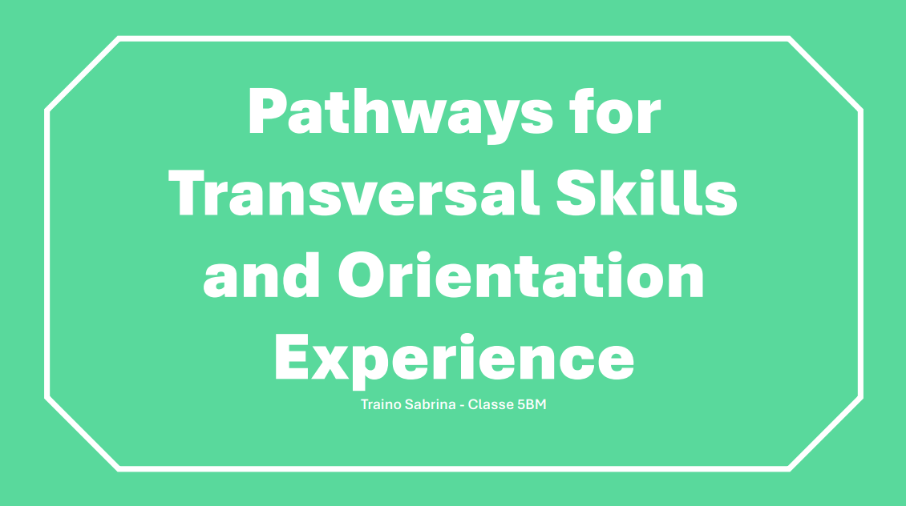

UNI.CO. è una società cooperativa che nasce dalla fusione di diversi intermediari regionali, assumendo il nome dall'abbreviazione di "Unione Confidi". La sua missione è supportare le imprese, in particolare quelle del territorio marchigiano e del centro Italia, offrendo una vasta gamma di servizi e prodotti finanziari su misura. Dal 2016, UNI.CO. è iscritta all'Albo degli Intermediari Finanziari vigilati dalla Banca d'Italia, attestando la sua solidità e credibilità nel settore finanziario.
L’organizzazione operativa di UNI.CO. si fonda su una presenza capillare sul territorio e un team altamente qualificato:
È presente con 7 sedi principali e numerosi sportelli secondari.
Interessa e collega più settori, è una società capitalizzata e strutturata,
capace di interloquire con credibilità con il sistema bancario e, grazie ai
risultati ottenuti sia in termini di volumi di attività finanziarie che di
professionalità acquisite, dal 2016 è iscritta all’Albo degli Intermediari
Finanziari, vigilati da Banca d’Italia.
UNI.CO. rappresenta oggi uno dei più importanti Confidi del centro Italia.
Forte di una struttura articolata, una solida base associativa e un’attenta governance,
svolge un ruolo fondamentale nel supporto finanziario e consulenziale alle PMI.
La sua capacità di integrare tradizione mutualistica, innovazione digitale e rigore normativo
la rende un punto di riferimento per le imprese che desiderano crescere e consolidarsi in un mercato
sempre più competitivo.
SCARICA PDF: Pathways Transversal Skills and Orientation Experience
Primo periodo: 18/05/2024 - 09/06/2022
Secondo periodo: 09/09/2024 - 23/09/2024
Sono stata seguita in modo eccellente dalla responsabile delle Risorse Umane e Formazione,
Silvia Ciavattini, e dal capo del dipartimento IT, Massimo Damiani.
Entrambi si sono dimostrati molto cordiali e disponibili: erano sempre pronti ad assistermi
in caso di necessità e a coinvolgermi in nuove attività, che ho affrontato con entusiasmo e impegno.
Nonostante la compagnia di Federica Chitti, dell’Ufficio Segreteria Societaria, e di Sara Santilli,
del reparto Marketing e Comunicazione, l’esperienza complessiva non è stata del tutto positiva.
Il lavoro d’ufficio si è rivelato piuttosto monotono e poco adatto alle mie inclinazioni personali.
Avrei preferito svolgere attività più pratiche o che mi permettessero di sviluppare maggiormente
le competenze di problem solving. Tuttavia, comprendo che, considerata la natura delicata dei dati
trattati dall’azienda, non fosse possibile affidarmi mansioni di quel tipo.
Nel corso del secondo periodo mi sono stati assegnati anche alcuni compiti in ambito contabile,
che ho svolto utilizzando il software Excel. Questa attività mi ha permesso di apprendere nuove
formule e funzionalità, tra cui la "Tabella Pivot", che si è rivelata particolarmente utile anche
in ambito scolastico, specialmente per l’elaborazione dei budget nei progetti assegnati in classe.
Durante questo tempo ho avuto anche la possibilità di realizzare qualche lavoro extra con PowerPoint per esplorare ancora di più il software.